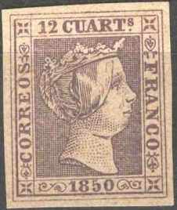
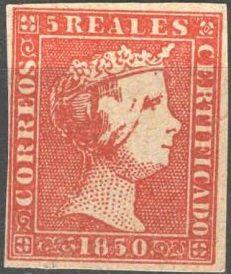
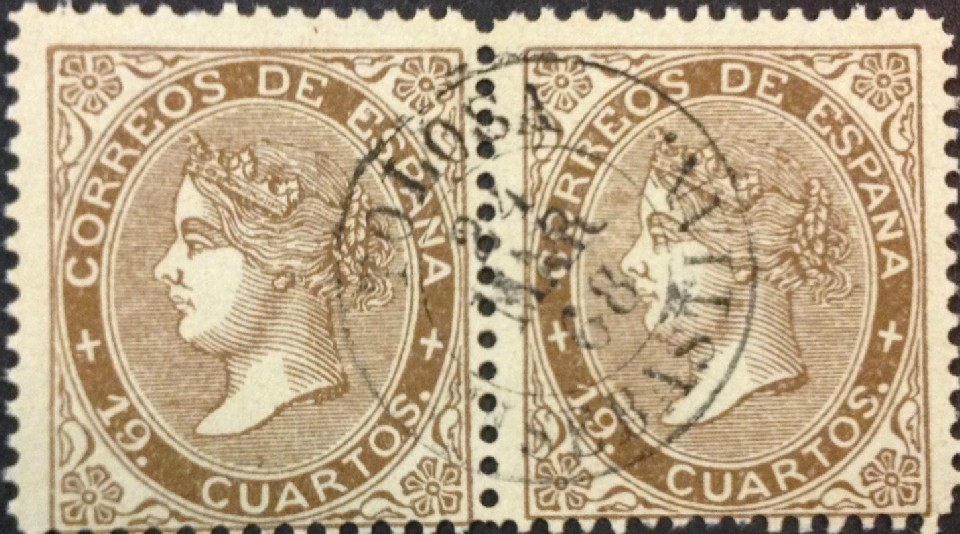

Stamp forger of Barcelona (Spain)
Return To Catalogue - Spain overview
Note: on my website many of the
pictures can not be seen! They are of course present in the
catalogue;
contact me if you want to purchase the catalogue.
Miguel Segui was a stamp forger of Barcelona (Spain), who produced forgeries of Spain and its colonies in 1905. More about this person can be found in the book 'Philatelic Forgers, their Lives and Works' by V.E.Tyler. His forgeries are quite deceptive. Most of his forgeries are uncancelled and are known under the name 'Barcelona forgeries'. He also made forgeries of Cuba, Fernando Po, The Philippines and Porto Rico.
Examples of what I presume are Segui forgeries of Spain:





Forgeries with cancel 'TOLOSA 24 MAR 68 SAN SEBASTIAN' or
uncancelled. In my view, in the 19 c, the 'U' of 'CUARTOS' is
leaning too much forwards. These are presumably Segui forgeries.


I've seen these forgeries with the cancel cancel 'TOLOSA 24 MAR
68 SAN SEBASTIAN' as well.


{kind=link}
{kind=link}
{kind=link}
{kind=link}
{kind=link}
{kind=link}
{kind=link}
{kind=link}
{kind=link}
{kind=link}
{kind=link}